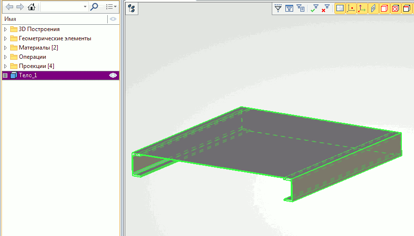
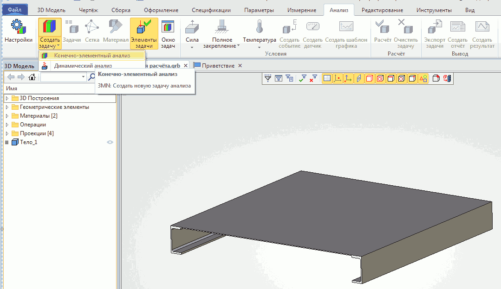
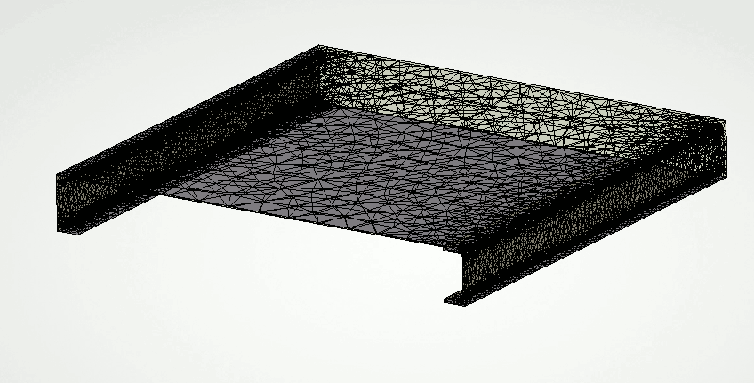
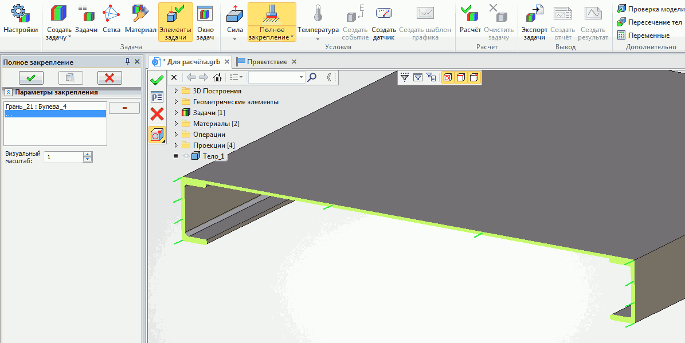
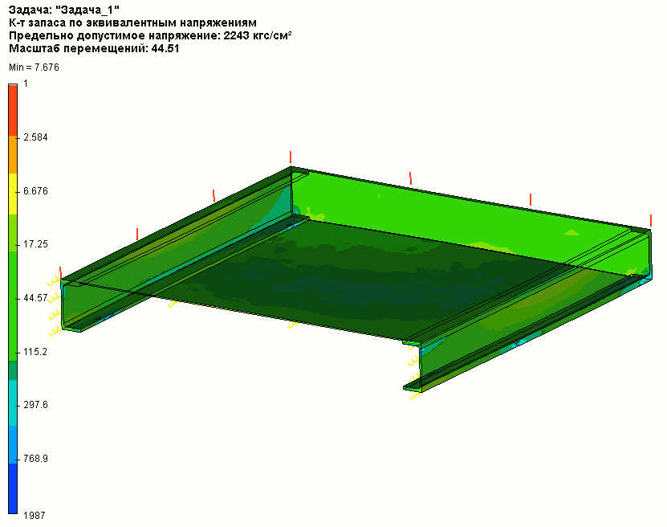

5. Пример выполнения статического расчёта на прочность в T - Flex
При выполнении профессиональных расчётов изучите справку по командам меню "Анализ" T - FlexCAD
(клавиша F1 при запущенной команде)
Выполним проверку на прочность консольной площадки габаритом 1000мм х 1000мм (2швеллера №12 с настилом из листа S = 3мм и торцовой зашивкой из листа S = 5мм). Площадка должна выдерживать нагрузку 250кг. Следует учесть, что при построении модели площадки результаты всех операций должны быть объединены в одно тело при помощи булевой операции Сложение.

Зайдём в меню Анализ и выберем Создать задачу — Конечно-элементный анализ. Выберем тело для анализа и кликнем по галочке.

Установим бегункои параметры сетки и кликнем по галочке.Созданная сетка

Выберем Полное закрепление и укажем грань (за которую крепиться консольная площадка).

Выберем Сила — Давление и укажем грань, на которую действует нагрузка.
Укажем значение давления и завершим ввод.Кликнем команду Расчёт.
По окончании расчёта в дереве модели можно будет найти и открыть результаты.
Откроем результат расчёта коэффициент запаса по эквивалентным напряжениям . Слева от модели расположена цветовая шкала, по которой примерно видно какое значение коэффициента запаса в определённом месте модели. Если щёлкнуть по любому месту модели появится точное значение коэффициента запаса для этого места.

А по этой эпюре можно легко определить деформации, возникающие при нагрузке. Принцип её использования аналогичен предыдущей. Например для нашей модели деформация в центре площадки составляет 1,127мм.